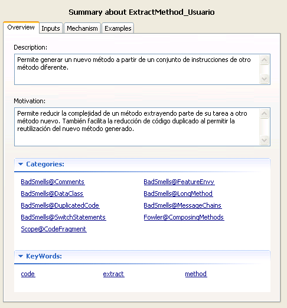
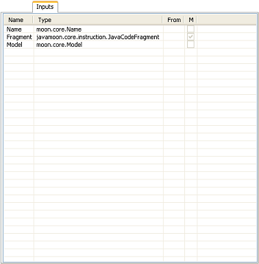
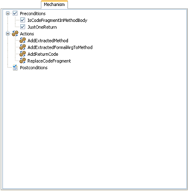
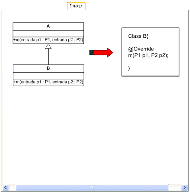
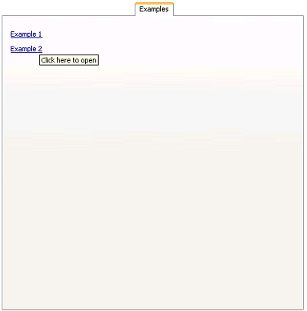

Summary PanelSummary Panel
Summary PanelSummary Panel
The Summary Panel it's located on the right side of the catalog view and it's shown when a refactoring is selected by double clicking over it in the catalog tree. This panel is meant to show all the information about a refactoring and it has a list of tabs where the information about the refactoring is distributed.
There's always a list of three tabs: Overview, Inputs and Mechanism and there are two tabs that are optional Image and Examples, that are only shown when the refactoring has either one of them.

Is the first tab of the panel and it shows the most general information about the refactoring. This includes the description, the motivation, the categories and the keywords.
It contains the list of the refactoring's inputs. The inputs are represented as rows in a table and for each row the table shows the input's name, type, method where the input is taken from and if the input is main or not.

Contains the list of the refactoring's mechanisms: the preconditions, actions and postconditions that form the refactoring.

It's an optional tab that only appears if the refactoring has a descriptive image defined. When a refactoring does have an image this tab shows that image so the user can see it.

It's also an optional tab. When a refactoring has examples it shows the links to the available examples for the refactoring.The links open a window that show an example with the source code before and after applying the refactoring.
